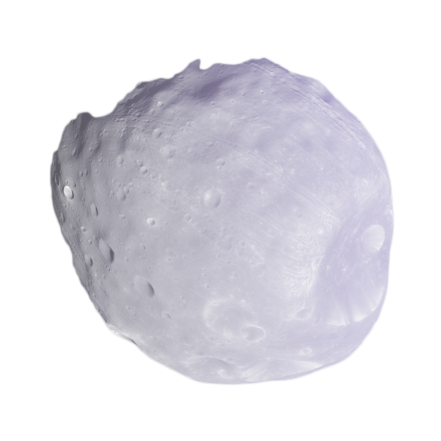

“DEIMOS”
“PHOBOS”
mars' moons
The moons of Mars are some of the smallest ones in the solar system. Phobos orbits Mars at a height of just 3,700 miles (6,000 kilometers), making it somewhat bigger than Deimos. No known moon orbits its planet more closely. While the farther away Deimos takes 30 hours for each orbit, it quickly circles Mars three times each day. Phobos is slowly spiraling inward, getting a little bit closer to the Earth every century—about six feet (1.8 meters). It will either collide with Mars in 50 million years or disintegrate and form a ring around the planet.

Hall gave the moons their names after the Ares, the mythical sons of Mars, the Roman god of war. Deimos and Phobos both refer to terror. appropriate names for the children of a war deity.
One night in August 1877, Asaph Hall was about to give up his fruitless hunt for a Martian moon, but his wife Angelina persuaded him to continue. The following night, he found Deimos, and six nights after, Phobos.
From its orbit around Mars, NASA's Mariner 9 spacecraft obtained a considerably better view of the two moons 94 years later. It discovered that a crater six miles across (10 kilometers)—nearly half the breadth of the moon itself—was Phobos' most prominent feature. Stickney, Angelina's maiden name, was used to address it.